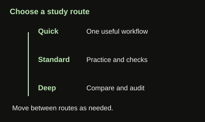

Choose your path
Start from an outcome and leave each session with something you can inspect.
Choose a learning path
Use the path that fits your time and goal. The times are planning estimates, not measured completion times. Every route includes an artifact, a recall check, and a transfer task.
Start with Foundations if terms such as tool, state, or acceptance check are new. Use the learning graph to see prerequisites and outcomes. See the task dependency graph and evidence graph for how work and claims connect.
Quick path · 5 minutes
Prerequisite: None. Open the lab page and use the existing worked result. The five minutes are an estimate for reading one case and writing a short answer.
- Read the invoice rule in the service lab. Record that 200 taxable cents at 8.25 percent gives 17 cents tax after half-cent rounding.
- Inspect the service tests. Find the regression case that checks the total.
- Close the page. Write the rule and the reason float truncation fails.
- Transfer the rule to an order with a delivery charge. State whether the charge enters the taxable amount.
Artifact: One acceptance check with input, expected total, and rounding rule. Recall: Recreate the 200-cent result without looking. Transfer: Define the tax base for a delivery charge. Check the result against the evidence graph.
Standard path · 20 minutes or 40 minutes
Choose the 20-minute reading route or the 40-minute hands-on route. These durations are planning estimates. They are not measured task times.
20-minute reading route
- Read the foundations sections on state, context, and stop conditions. Prerequisite: basic familiarity with files and tests.
- Read repository orientation and review practice. Follow their source links to E01 and E10.
- Inspect the support queue workflow. Trace the restart after a write timeout.
- Read task dependencies and evidence links. Explain why integration happens before audit and retest.
Artifact: A short handoff with state, evidence, next action, and stop condition. Recall: Name the fields to inspect before a retry. Transfer: Apply the same recovery rule to a report that may have saved before a timeout.
40-minute hands-on route
- Run the lab replay into a new output directory. Prerequisite: Python 3.10 or later and a terminal.
- Compare the original and updated invoice service. Run the commands in Lab 1. Explain why the original fails.
- Inspect the recorded benchmark files in Lab 2. Recompute one shifted error count from errors.csv.
- Inspect the support report and checkpoint in Lab 3. Run the same output path again and confirm the intact draft stays unchanged.
- Use the evidence graph to write one supported claim and one limit.
Artifact: A local run directory, one recomputed metric, and a recovery note. Recall: List the invoice acceptance checks and the benchmark split rule. Transfer: Propose a safe review draft for another local CSV, with row citations and a human stop point.
Deep path · three study blocks
Use three separate study blocks. Set their duration to fit your schedule. This route has no fixed completion time. Prerequisite: comfort with basic code, test output, and tables.
Block 1: Specify and implement
- Read Engineering, then inspect the invoice baseline, implementation, and tests.
- Use the acceptance prompt to write exact behavior for rounding, discount order, invalid types, and large values.
- Use the test design prompt to cover each rule with independent expected values.
- Run the service tests. Save the command, result, and changed files as the block artifact.
Retrieval: Recreate the half-cent calculation from memory. Transfer: Write a contract for tax on shipping before editing code.
Block 2: Evaluate and explain
- Read Research and E03. Note the difference between an evaluation split and a training split.
- Inspect all three benchmark seeds in the benchmark lab. Compare full and sensor-only results on both splits.
- Use the experiment design prompt to state the question, baseline, fixed inputs, metric, and stop rule.
- Use the error analysis prompt to explain the contradiction between ordinary and shifted performance.
Artifact: A compact result table with denominators, error counts, and limits. Retrieval: Explain why the shifted rows must not tune the rule. Transfer: Design a split for a ticket classifier whose shortcut signal changes over time.
Block 3: Build a reviewable workflow
- Read Business and inspect the queue source, draft, and state files.
- Use the business process prompt to set a boundary at a local draft.
- Use the independent audit prompt to recompute counts from the CSV.
- Use the handoff prompt to describe recovery after a write-timeout.
Artifact: A source-linked draft, independent count check, and restart instruction. Retrieval: Explain why R06 is excluded. Transfer: Draft an inventory exception report with a threshold and row-level citations.
Route map
| Path | Prerequisite | Artifact | Retrieval | Transfer | Graph |
|---|---|---|---|---|---|
| Quick | None | Invoice acceptance check | Recreate 217-cent result | Set a delivery fee tax rule | Evidence |
| Standard | Basic files and tests | Run record and recovery note | Recall checkpoint fields | Recover a report after timeout | Tasks |
| Deep | Basic code and tables | Tests, result table, source-linked draft | Recall rules without notes | Apply rules to new inputs | Learning |
Return to the learning graph or open the graph index.
